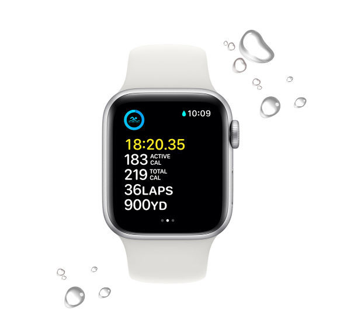
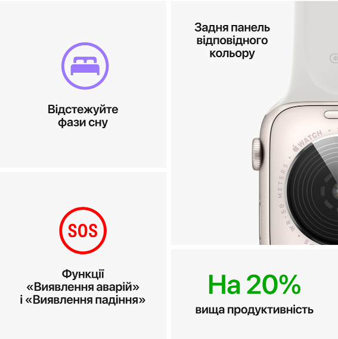

WATCH
SE
Можно закохатися.
З багатьох причин.
Основні функціі для
підтримання здоров'я,безпеки
й активного способу життя.

Захист від води
 Основні характеристики
відповідайте на дзвінки
та повідовлення просто
шз
зап'ястя
До 20% швидший
за попередній
Apple Watch SE
Розширені функціі безпеки,
зокрема Виявлення падіння,
Сигнал SOS ш Виявлення аварій
Відстежуйте свою активність
протягом дня з Apple Watch,
а потім перенлядайте
тенденціі в додатку "Фгтнес"
на Iphone
Покращений додаток
"Тренування" з
удосконаленми
підходами
до вправ
Отримуйте сповіщення
при високий,низький і
порушений
серцевий ритм
Слухайте улюблену музику,
подкасти й айдіокниги
(для
використання в моделях
GPS)
Захист води
Відстеження сну дає
змогу дізнатися,
скільки часу ви
перебували
у фазах швидкого,
повільного та глибокого сну
watchOs 9 підтримує
покращений додаток
"Тренцвання",новий
додаток
"Ліки",фази сну та дає змогу
краще відстежувати
ритм
сердця